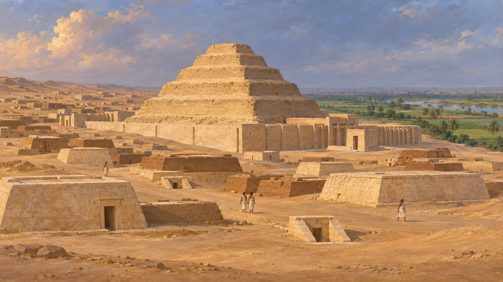
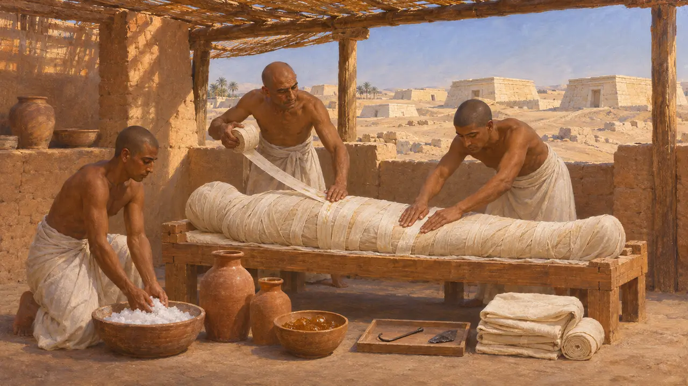
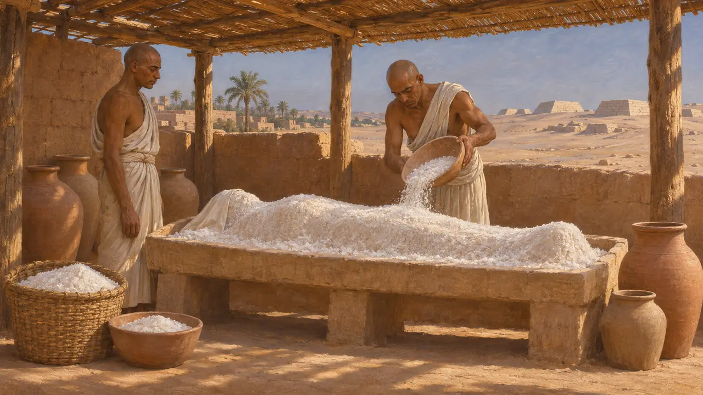
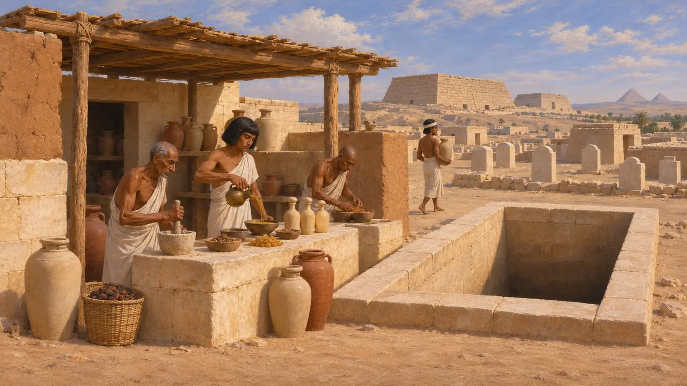
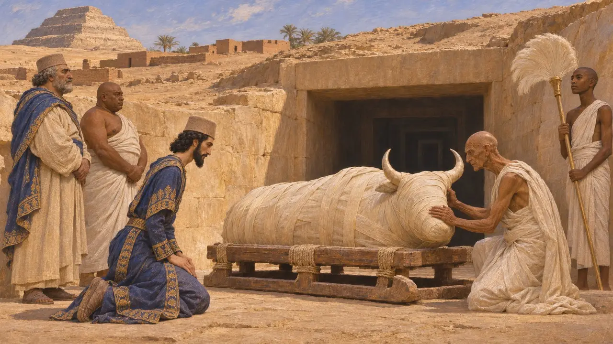

墓城
埃及孟斐斯西侧沙漠边缘的墓地，公元前525—前524年
孟斐斯以西，在尼罗河泛滥线之上的干燥台地上，坐落着埃及最大的墓地之一，今天以萨卡拉、阿布西尔等名称为人所知。在波斯征服之前的两千多年里，孟斐斯人一直将死者葬于此地。国王、祭司、官员以及神圣的阿匹斯公牛，都长眠于这同一片沙漠边缘。
游戏中： 在孟斐斯关卡中，墓地以墓城的形式出现，由搬运者运送死者。未安葬的死者引发疾病是游戏的简化处理；用泡碱处理七十天的说法沿用希罗多德的记载，不过实际干燥所需时间可能更短。

洪水彼岸的亡者之城
见于史载发掘显示，孟斐斯的墓地沿着城西的沙漠边缘绵延数十公里，从吉萨经阿布西尔、萨卡拉直到代赫舒尔。这里的沙地高出每年洪水所及之处，又过于干燥而无法耕种，这正是人们在此安葬的部分原因。在萨卡拉，左塞尔阶梯金字塔矗立于历代墓葬之间，其中包括许多波斯人到来前不久的赛斯王朝时期竖井墓。
Excavation reports at Saqqara and Abusir; J. Taylor, Death and the Afterlife in Ancient Egypt, 2001

希罗多德论防腐师
古代记述希罗多德记载，防腐师提供三个等级的处理方式，价格各不相同。最昂贵的一种，先用铁钩取出脑髓，再用锋利的埃塞俄比亚石切开腹侧，取出内脏，然后将尸身浸于泡碱之中，最后用涂了树胶的亚麻布条包裹。他说，较便宜的方法则是在浸泡泡碱之前注入雪松油，或仅做简单的清肠。
Herodotus 2.86-88

晾晒需要多久
争夺中希罗多德称，尸体浸于泡碱中七十天，不得更久。多数埃及学家认为，这七十天指的是从死亡到下葬的整个仪式时长，而以泡碱干燥尸身本身大概只需四十天左右。《圣经》记载雅各的葬礼时，也将四十天的防腐与埃及人七十天的哀悼分开叙述。
Herodotus 2.86; Genesis 50:3; S. Ikram and A. Dodson, The Mummy in Ancient Egypt, 1998

当时的作坊与墓葬
见于史载2018年，发掘者在萨卡拉的墓井旁发现了一座赛斯时期与波斯时期的防腐作坊，内有盛放油脂和树脂的器皿。在附近的阿布西尔，捷克考古学家清理了为乌加霍列斯奈特修建的大型竖井墓。乌加霍列斯奈特是先后效力于冈比西斯和大流士的埃及官员。萨卡拉出土的卡里亚文和阿拉米文墓碑表明，居住在孟斐斯的外国人也葬在那里。
L. Bareš, Abusir IV: The Shaft Tomb of Udjahorresnet, 1999; O. Masson, Carian Inscriptions from North Saqqâra and Buhen, 1978; Saqqara excavation reports

冈比西斯治下的阿匹斯安葬
见于史载孟斐斯的阿匹斯圣牛葬于萨卡拉宏大的地下廊道，即塞拉皮雍。冈比西斯在位第6年，约公元前524年，有一头阿匹斯死去并下葬，安葬时所立的石碑上刻有冈比西斯跪拜圣牛的形象。希罗多德后来讲述了冈比西斯杀死一头阿匹斯的故事，但这一证据并不支持此说，不过一些学者认为他的故事指的是下一头圣牛。
Apis stela of Cambyses' year 6; G. Posener, La première domination perse en Égypte, 1936; Herodotus 3.27-29
来源
- Herodotus 2.86-88
- S. Ikram and A. Dodson, The Mummy in Ancient Egypt, 1998
- J. Taylor, Death and the Afterlife in Ancient Egypt, 2001
- L. Bareš, Abusir IV: The Shaft Tomb of Udjahorresnet, 1999
- G. Posener, La première domination perse en Égypte, 1936
- P. Briant, From Cyrus to Alexander, 2002